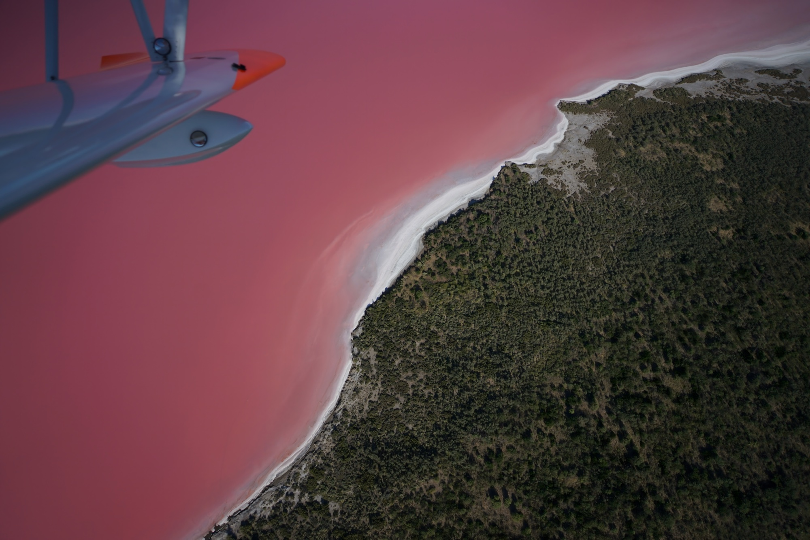
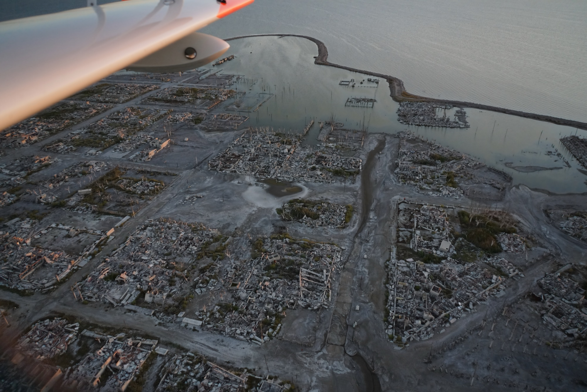

"Hola chicos" comme ils disent ici ! Entre deux nouvelles rédigées de notre part, sachez que vous pouvez suivre notre position en direct depuis notre site internet.
Un petit retour en arrière s'impose depuis notre départ d'Europe en février dernier. Au Brésil, chez Edra près de São Paulo, nous avons tout d'abord pris possession de notre nouvelle maison volante et flottante. Après un concours parmi les internautes, le design final de l'hydravion fut choisi à partir des propositions d'une classe d'élèves de primaire : baleine, requin ou poisson-clown ? Vous avez choisi la baleine !
Après notre départ d'Edra, nous sommes descendus vers le Sud de la côte brésilienne à Florianópolis, puis sommes entrés en terres argentines au niveau des chutes d'Iguazú, au soleil couchant. De là la route nous a portés vers El Dorado, Posadas puis Mercedes, à la rencontre des "gauchos" — ces fermiers à cheval qui parcourent leurs "estancias" sur des kilomètres de steppes fertiles, entourés de nandous, de capybaras et de nuées d'oiseaux superbes.

La mission : comptage des flamants roses
Nous avons rejoint la ville de Carhué, qui a recueilli les habitants de la ville voisine évacuée après avoir été entièrement engloutie par le lac salé Epecuén. Les responsables du parc naturel nous ont mandatés pour effectuer une comptabilité aérienne des flamants roses qui peuplent ce fameux lac, en se nourrissant des artemia salinas — ces crustacés capables de survivre dans un environnement salin extrême.
À l'occasion de ce survol, nous avons pu admirer non seulement l'envol majestueux des flamants roses, mais aussi cette ville récemment ressortie des eaux, dont les arbres et les maisons calcinés par le sel offrent un spectacle à la fois fascinant et mélancolique.

La suite du périple
Nous nous sommes ensuite posés dans les aéroports de Trelew, Comodoro Rivadavia, Gallegos, Ushuaia, et enfin Puerto Williams — la ville la plus au sud du continent sud-américain, où nous avons rencontré la dernière locutrice du Yamana, la langue indigène du peuple du même nom.
De là nous sommes remontés le long de la côte vers la venteuse Rio Grande, puis sommes entrés dans les terres vers la ville de Calafate. Les vents à affronter pour tout ce périple ont été particulièrement éprouvants. Nous sommes heureux d'avoir toujours pu compter sur les pilotes locaux des aéroclubs, qui possèdent une expertise hors pairs pour affronter les conditions locales — et une grande hospitalité : à chaque étape, un "asado" nous attendait !
À partir de maintenant, les missions scientifiques vont s'accélérer à grands pas ! Au programme des trois prochains mois : les glaciers, les montagnes enneigées inaccessibles, les lacs en danger de pollution, les fossiles de dinosaures, et la création de parcs naturels.
Période : Juin 2016
Mission : Comptabilisation et identification des flamants roses et des zones d'artemia salina
Objectif : Documentation du milieu naturel des flamants roses